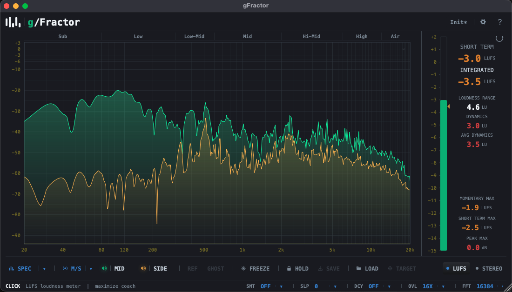

gFractor is a professional-grade M/S spectrum analyzer, oscilloscope, and stereo metering suite — free, no registration, no telemetry. Version 1.2.0 is now available.

Switch between Mid/Side, Left/Right, and Transient/Tone channel modes. All three visualized simultaneously with color-coded curves.
FFT 2048–16384 points. Fractional-octave smoothing (Off / 1/3 / 1/6 / 1/12), spectrum tilt 0 to +6 dB/oct, draggable curve ordering, Fill modes (None / Gradient / Solid), and 256 log-spaced path points at 60 fps.
Time-domain waveform view with variable time window (100 ms – 4 s) and vertical scale. Spectral coloring highlights harmonics. Optional CRT filter with denser grid graticule for a warmer, analog-feeling trace.
Lissajous stereo field display with phosphor persistence, L/R phase correlation bar (−1 to +1), and per-octave stereo width readout.
Integrated loudness and peak metering across both primary and secondary channels. True-peak indication, selectable weighting.
Reference spectrum overlay, freeze the display for detailed inspection, and infinite peak hold — all independently toggled.
A scrolling reassigned spectrogram snaps energy to its true time–frequency location — pure tones paint razor-sharp lines instead of smeared bands. FFT 2k / 4k / 8k, freeze, and reassignment on/off toggle.
Click any of seven frequency-band tabs to solo it and hear it in isolation. Cmd-click to latch; right-click to cut (notch) instead. Solo = blue/solid, cut = red/dashed — colour-blind friendly.
Stack Primary and Secondary into top and bottom halves for both the spectrum and oscilloscope — compare channels without overlap, side-by-side in a single view.
Use these as-is or adapt them. Click any block to copy to clipboard.
This Free Spectrum Analyzer Is Better Than Paid Ones (gFractor 1.2.0) The Best FREE Spectrum Analyzer Plugin in 2026 — gFractor Review gFractor: Free M/S Spectrum Analyzer with Goniometer + LUFS Metering I Tested Every Free Spectrum Analyzer. This One Won. Free Plugin Review: gFractor 1.2.0 — M/S Analysis, Oscilloscope & More
gFractor is a free professional spectrum analyzer plugin by Growl Audio. Version 1.2.0 adds four analysis modes (M/S, L/R, Transient/Tone, and mono-sum L+R), a Waterfall reassigned-spectrogram view, and click-to-audition frequency bands — alongside an oscilloscope, goniometer, stereo correlation meter, and LUFS metering. Free as VST3, AU, and standalone, with no registration or telemetry.
In this video I'm reviewing gFractor — a completely free spectrum analyzer plugin from Growl Audio. Version 1.2.0 is out now. gFractor covers everything you'd normally need multiple paid plugins for: a real-time FFT spectrum analyzer with four channel modes (M/S, L/R, Transient/Tone, and mono-sum L+R), a scrolling Waterfall reassigned-spectrogram view, click-to-audition frequency bands, a time-domain oscilloscope, a goniometer (Lissajous stereo field), L/R phase correlation, per-octave stereo width display, and LUFS/peak metering — all in one plugin. 🔗 Download gFractor FREE: https://growl-audio.com/plugins/gfractor.html#download Plugin details: • Price: Free • Formats: VST3 / AU / Standalone • Platforms: macOS (Apple Silicon + Intel), Windows 10 & 11 • Version: 1.2.0 • No registration · No telemetry Timestamps: 0:00 — Intro 0:45 — Installation 1:30 — Spectrum Analyzer overview 3:20 — M/S & channel modes deep dive 5:10 — Waterfall view 6:30 — Oscilloscope view 7:40 — Band Audition 8:40 — Goniometer + Correlation 9:30 — Final verdict
Just dropped a video on gFractor — a free spectrum analyzer that packs M/S analysis, an oscilloscope, goniometer, and LUFS metering into one plugin. Version 1.2.0 is out now and it's free. No catch. Check it out 👇
gFractor, free spectrum analyzer plugin, free VST3 plugin, free AU plugin, M/S spectrum analyzer, mid side analysis, free mastering plugin, LUFS meter free, oscilloscope plugin, goniometer plugin, Growl Audio, free audio plugin 2026, free plugin review, spectrum analyzer tutorial, stereo analysis plugin
All assets free to use in editorial coverage of gFractor. Please do not alter the logo mark or colors outside of standard color corrections.
Download all assets ZIP · 428 KBReach out for review copies, interview requests, early access to future releases, or anything else your coverage needs.
{kind=link}
{kind=link}
{kind=link}
{kind=link}
{kind=link}